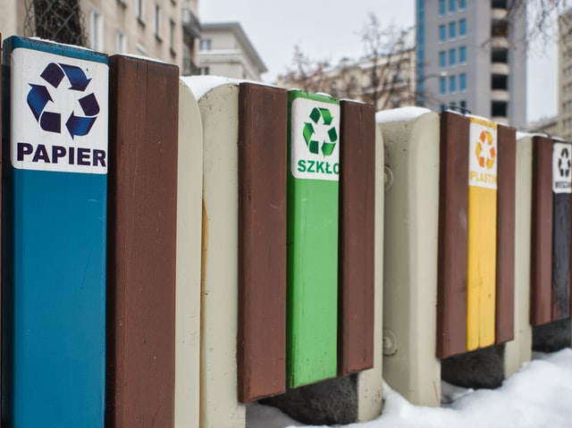

분리수거(分離收去, 영어: waste sorting)는 폐기물의 중간 처리 (소각 및 재활용 등) 및 최종 처분을 쉽게 하기 위해 그 재질마다 폐기물을 분류하고 그것을 수집하는 것을 말한다. 《표준국어대사전》에서는 "종류별로 나누어서 버린 쓰레기 따위를 거두어 가는 것"으로 정의하고 있다. 대한민국에서는 가정에서 쓰레기를 분류하여 밖으로 내놓는 경우에도 '분리수거'라는 표현이 널리 쓰이나, 본 의미는 "쓰레기나 재활용품 등을 종류별로 나누어서 늘어놓은 것을 거두어 가는 것"으로 해석할 수 있기에 정확한 쓰임새는 아니다. 따라서 '쓰레기를 종류별로 나누어 내놓기'라는 의미에서는 '분리배출' 내지는 '분류배출'이라는 용어를 써야 한다는 시각도 있다.

제주도는 재활용품 요일별 배출제를 쓰레기 대란의 해결책으로 제시한다.